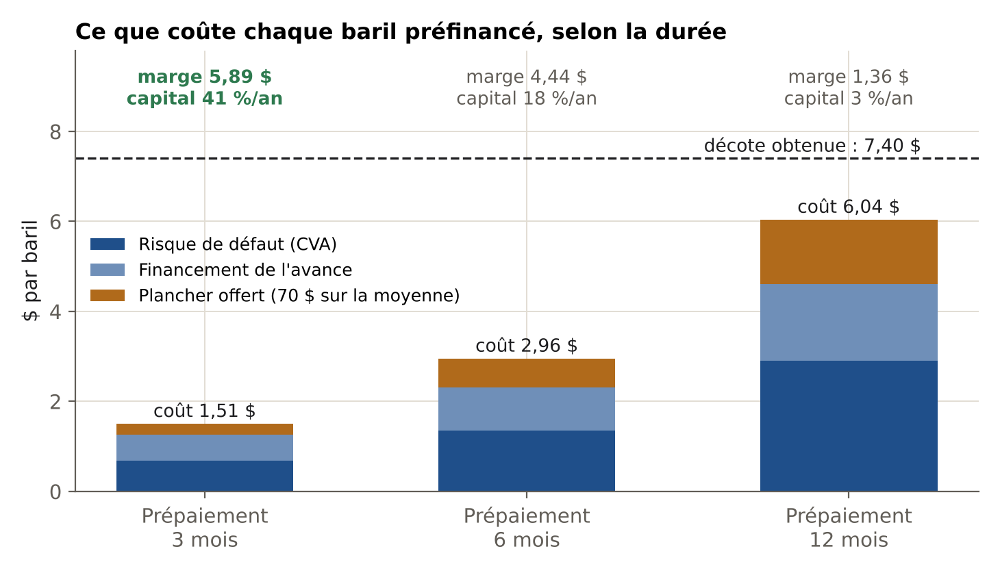

Préfinancer les petits producteurs en difficulté : sur 3 mois, pas sur 12.
Un producteur à court de cash vend son pétrole avec une décote à qui le paie d'avance. J'ai cherché qui sont ces producteurs, ce que coûte vraiment chaque baril une fois le risque payé, et quelle structure garde la marge. La réponse tient en une ligne : un prépaiement glissant de 3 mois, couvert par des futures, ne coûte que 1,51 $ par baril ; sur 12 mois, il en coûte 6,04 $ et la marge disparaît.
Cinq décisions
| Question | Décision | Pourquoi |
|---|---|---|
| Qui | 13 opérateurs texans de plus de 500 b/j, encore actifs, avec au moins 15 % de risque de sortie à deux ans | Le modèle de détresse classe correctement 71 % des paires sur une crise qu'il n'a pas vue (étape 1) |
| Quelle structure | Prépaiement glissant de 3 mois, renouvelé chaque trimestre | Le risque de défaut et le coût du financement grandissent avec la durée : 1,51 $ de coût à 3 mois, 6,04 $ à 12 mois |
| Quel prix | Exiger au moins 1,51 $ de décote ; viser 4 $ ou plus | À 4 $, le capital rapporte 17 % par an ; à 7,40 $, 41 % |
| Quelle garantie offrir | Un plancher sur le prix moyen à 70 $, pas un plancher mensuel à 80 $ | Le premier coûte 0,25 $ par baril sur 3 mois ; le second mangerait presque toute la décote |
| Combien et quelle limite | 10 000 b/j au total, environ 770 par producteur, prix couvert par vente de futures | 52 M$ de capital, 9 à 22 M$ de profit par an, pire trimestre de crédit 6,7 M$ |

Les risques, chiffrés
- Le marché est agité en ce moment. La perte journalière à 1 % de probabilité est de 12,8 % aujourd'hui, contre 4 à 5 % en période calme. Il faut donc couvrir le prix avant de signer, pas après.
- Les krachs sont plus violents que ne le prévoit une loi normale. Une perte d'un jour sur mille atteint 25 % sur le WTI, pas 9 %. Seul un modèle qui suit la volatilité du jour et traite à part les chocs extrêmes a tenu sur 2020-2026.
- Les producteurs font défaut ensemble. Ils vendent tous le même baril : quand le prix chute, les défauts arrivent en grappe. Sur le portefeuille, cela augmente la perte extrême de 23 % par rapport à des défauts indépendants. La limite par producteur compte plus que le nombre de producteurs.
- Le retour du prix vers 65 $ est incertain. La vitesse de ce retour est mal mesurée par les données. Stocker du pétrole en pariant dessus est risqué : la couverture par futures protège contre cette erreur de modèle.
- Une sortie de production n'est pas toujours une faillite. Certains opérateurs cèdent leurs puits à un autre. Les 13 noms sont des pistes à vérifier un par un, pas des cibles certaines.
Hypothèses : dernier prix WTI 96,24 $ (6 octobre 2026) ; probabilité de défaut de 15 % par an, plus forte quand le prix baisse ; récupération de 50 % de la valeur des réserves nanties ; financement à 4 %. La décote obtenue est une hypothèse de négociation : aucune donnée publique ne la mesure. Les noms des producteurs ne sont pas publiés.